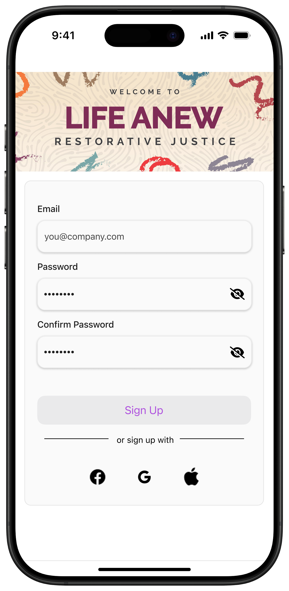
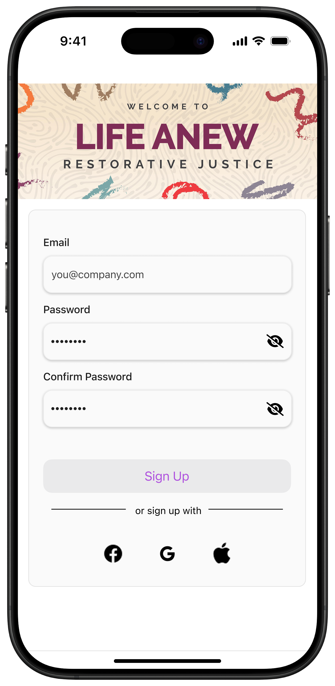

Life Anew Restorative Justice
Connecting Restorative Justice Efforts with a Dual-Sided Mobile Platform
The Challenge: Operational Inefficiency and Crisis Response Delay
-
Operational Overhead: Staff relied on fragmented, non-digital processes, leading to increased overhead and inconsistent service delivery.
-
Critical Access Barrier: Community members lacked a simple, digital pathway to access time-sensitive resources (e.g., shelter, legal aid).
-
The Opportunity: Design a unified, interconnected mobile ecosystem to empower staff efficiency and provide direct, real-time community access.
The Goal: Maximize organizational efficiency and accelerate the delivery of essential services by eliminating complex internal bureaucratic barriers and providing direct resource access. This ensures staff can focus on high-value casework and community members receive critical support instantly, without navigating outdated internal systems.
The Results:
-
The platform's release led to a reduction of 60% in time spent by staff on resource coordination and documentation, allowing teams to focus on direct client support.
-
Alongside a 50% decrease in onboarding time for new staff due to the centralized, easy-to-navigate resource hub.
-
Prior to the app, critical resource requests often took days, or even weeks, due to reliance on contacting busy, understaffed leads. The new platform has reduced this delivery time from weeks to moments.
-
The Case Example: In a high-stakes case involving a family whose son was shot, the new digital workflow allowed the family to access immediate crisis resources and documentation that previously took days, in some cases weeks, of phone tag and bureaucratic delay, proving the solution's ability to facilitate real-time restorative action.
System Mapping: Streamlining the Critical Path

-
Key Design Decisions: The primary goal of this flow was to de-risk the resource delivery path for staff and minimize steps to reach crisis help for community members.
-
Staff Flow Insight: I prioritized placing the most frequently accessed resources (e.g., Crisis Protocol, Documentation Forms) within a single tap of the home screen to drastically reduce cognitive load and search time.
-
Community Flow Insight: The community-facing flow uses a linear, guided path for resource access, ensuring users in stressful situations are not overwhelmed by choices, minimizing drop-off.
Ideation & Early Concepts: Low Fidelity Sketches

-
I used quick sketches to test fundamental interaction patterns, specifically for the dual-interface challenge. This rapid prototyping allowed me to validate the information architecture before committing to high fidelity.
- Initial low-fidelity concepts featured team imagery at the top of the employee Home screen. Testing quickly revealed this obstructed immediate access to critical workflow resources. I iterated to prioritize efficiency, pushing non-essential visuals to the bottom to ensure zero-friction access to staff tools.
Prototypes: iPhone & Tablet
Employee-Facing Screens (swipe to view more)
 



The design is fully responsive and optimized for use across both iPhone and Tablet devices. This ensures staff maintain continuous, high-fidelity access to crucial tools and data while performing tasks in the field.
The employee Home screen is designed to be task-forward and utility-focused.
-
Actionable Data: A dedicated calendar and scheduling widget provides immediate visibility into daily caseloads and upcoming events, serving as the primary touchpoint.
-
Geospatial Intelligence: A criticality heat map visually guides staff toward high-need areas in Austin, enabling proactive resource deployment and strategic field prioritization.
-
Training & Program Oversight: A dedicated module provides staff with instant access to their required training resources (e.g., how to conduct a community circle to deal with emotions instead of resorting to violence). This centralized management view eliminates fragmented paper trails and ensures staff compliance and preparedness for high-stakes interventions.
-
Unified Access: All organizational resources are centralized and easily navigable via a persistent menu, drastically reducing search time and reliance on fragmented internal systems.
-
Visual Design: Adheres to principles of clean, minimal UI and cognitive efficiency. This ensures the interface remains clutter-free and highly legible, allowing staff to maintain maximum focus on task completion during high-stakes, time-sensitive interventions.
Community Facing Screens (swipe to view more)


-
Mission-Driven Hierarchy: The Home screen prominently features a strategic donation CTA. This placement aligns the design with the organization's core nonprofit mission, prioritizing immediate fundraising visibility without compromising resource access.
-
Empowering Engagement: An interactive community calendar is displayed on the Home screen, providing immediate visibility into critical resource events, educational workshops, and volunteer opportunities. This encourages proactive community participation and outreach.
-
Accessible Program Enrollment: Instead of internal management tools, the interface features a streamlined Program Catalog. Users can easily view detailed program descriptions, eligibility requirements, and complete the sign-up process digitally, removing reliance on staff mediation.
-
Visual Design: Priotitizing simplicity and trust, the overall aesthetic is designed to be highly accessible and reassuring, using a clear hierarchy and approachable language to build immediate user trust and minimize cognitive burden for individuals seeking critical support.